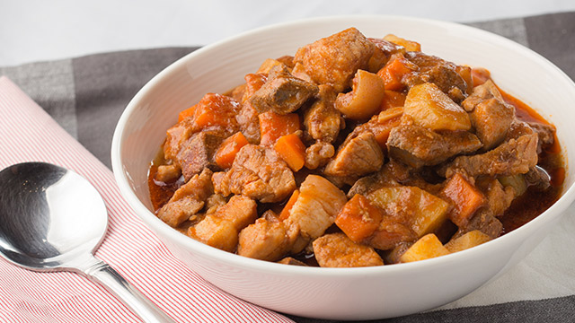

Home
Menudo

Ingredients
-
2 tablespoons cooking oil
-
3 cloves garlic, minced
-
1 onion, chopped
-
1 kilo pork
-
1/2 cup soy sauce
-
1 teaspoon sugar
- 3/4 cup tomato sauce
- 1 cup water
- 2 to 3 pieces dried bay leaf
- 1/4 kilo pig liver
- 1 cup potatoes, diced
- 1 cup carrot, diced
- Salt, to taste
Instructions
- In a saucepan, saute garlic and onion in oil.
- Add the pork. Cook for 5 minutes.
- Pour in soy sauce, sugar, tomato sauce and water and then add the bay leaves. Simmer for 30 minutes or until the pork is tender.
- Add the the liver and cook for 5 minutes.
- Add potatoes, carrots, then season with salt, and pepper. Stir and cook for 15 minutes.